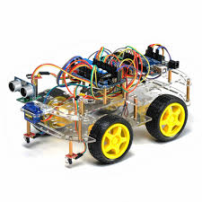
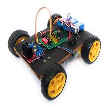
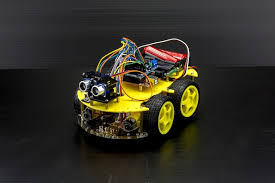

What's Embedded System and Where to be used?
Welcome to the Embedded System section at JoCircuit Hub, where we empower you to explore the fascinating world of intelligent systems. In this dynamic field, everyday objects gain the ability to communicate, interact, and exchange data, creating a web of possibilities that is reshaping industries and our daily lives. Our learning journey in Embedded System is designed to take you from understanding the foundational concepts to building your own smart, interconnected solutions.
Our Approach to Embedded System Learning: From Connectivity to Application
At JoCircuit Hub, we believe in a hands-on approach to mastering the Embedded projects. Our step-by-step guides and engaging projects will immerse you in the practical aspects of IoT development. You'll learn how to establish seamless communication between devices, leverage various connectivity protocols, and harness the power of data generated by these interconnected systems. Our focus is on building real-world Embedded System, fostering your ability to identify challenges and create innovative solutions that bridge the physical and digital realms.

What You'll Explore in Our Modulesof Embedded System: Building the Embedded World
Our comprehensive Embedded modules will guide you through the essential layers and concepts of building interconnected systems:
- Embedded System Architectures: Understand the fundamental building blocks of Embedded systems, from edge devices and application layers. Explore different architectural patterns and learn how to design scalable embedded projects.
- Wiring: Connection of differnt wires in order to create connectionMQTT, HTTP, CoAP, and Bluetooth Low Energy, understanding their strengths, weaknesses, and best use cases for different IoT scenarios.
- Chip Modules: Learn how to interface with many differentmodules like i2c,GSM,.... inorder to enhance your System performance.
- Electronics components: Electronics components and learn how to leverage their services for your projects.
- Connection: Learn a great way of connection inorder to bukid well your System.
- Power Supply:Learn many differnt ways of Powering that system, Inorder to function well.
- Security: Manage a proper security of your device, Protect it well as to be.

Refer-on different Embeded System Projects: Connecting many ideasbased on internally manufactured
Our Embedded System learning journey is heavily driven by engaging projects that allow you to apply your understanding in practical ways. You'll have the opportunity to design and build your own connected devices, collect and analyze real-time data, and create intelligent systems that respond to their environment. These projects will solidify your skills and empower you to innovate within the rapidly evolving landscape of the Embedded System.

Become Part of the Embedded System Innovation Community
Connect with fellow Embedded System Technicians, share your project ideas, and collaborate on building the future of interconnected devices. Our community provides a platform to exchange knowledge, troubleshoot challenges, and inspire new innovations in the exciting field of the Embedded System.
.png)
Get into our IoT modules and projects to unlock the transformative potential of connected devices and become a driving force in the next era of technology!